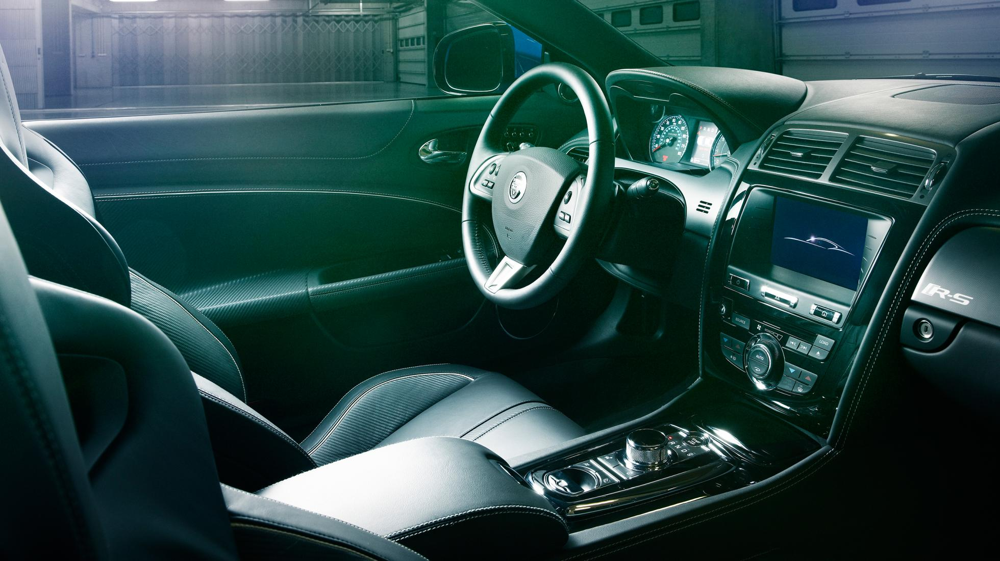
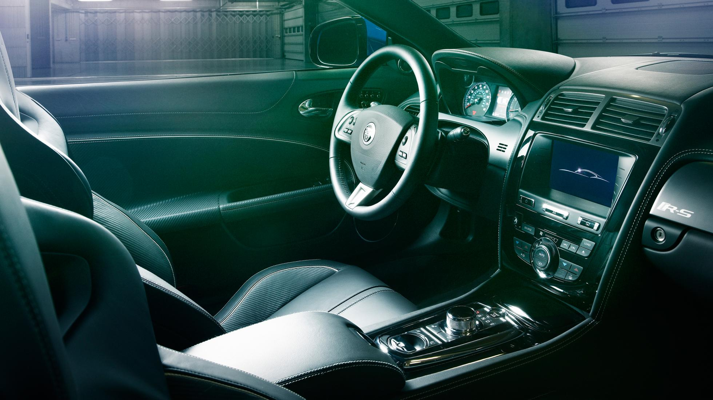
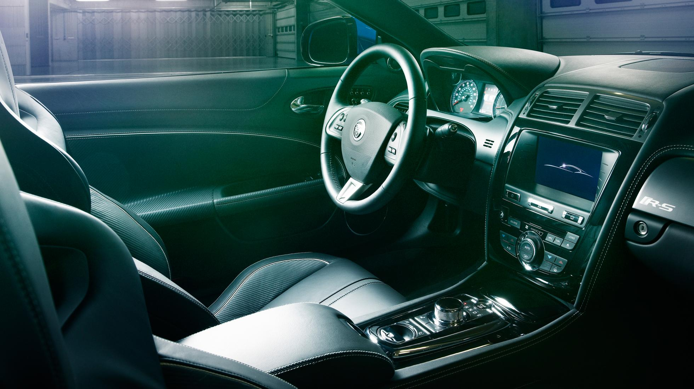

| MODELLO | Prezzo | l motore e disp. cilindri | CV | km/h | 0-100 | km/l | kg |
| XK | 102.333 | 5000 V8 | 385 | 250 | 5,6 | 8,9 | 2120 |

La Jaguar XK Cabrio ha fascino da vendere, con quel tetto in tela che, una volta aperto, permette di godersi il suono del potente motore V8 da 5.0 litri, e quando è chiuso isola l’abitacolo grazie alla sua composizione a triplo strato. Ancor più della versione chiusa, la XK Coupé è maggiormente votata ai lunghi viaggi piuttosto che alle giornate in pista nonostante abbia delle prestazioni da supercar. La Jaguar XK Cabrio è stata aggiornata nel 2011.